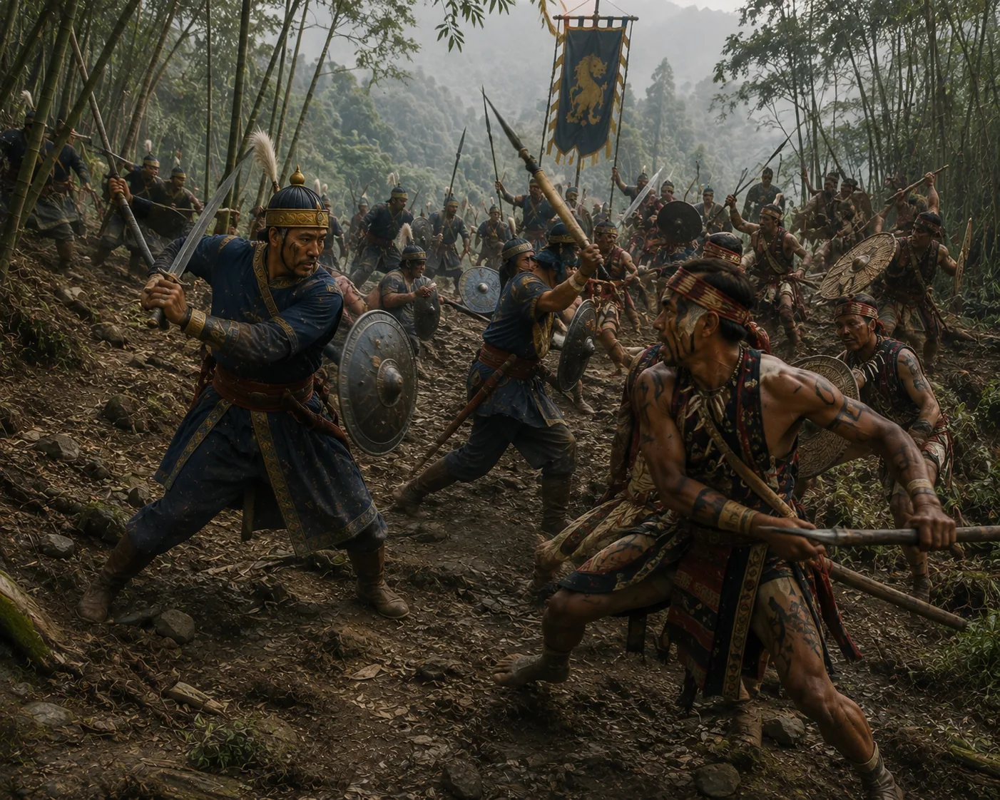

The Fierce Battle of the Naga Hills
c. 1278 · The coming of Sukaphaa

Ahom forces fight intense uphill engagements against fortified Naga hill positions, defeating hostile warriors in dense jungle terrain.
Sources have not yet been catalogued for this record.
People: Suteuphaa
Open this scene in the interactive archive · Follow this event on MAP